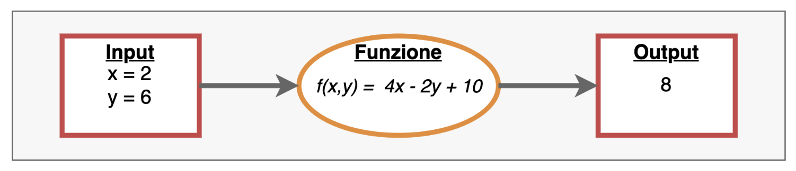
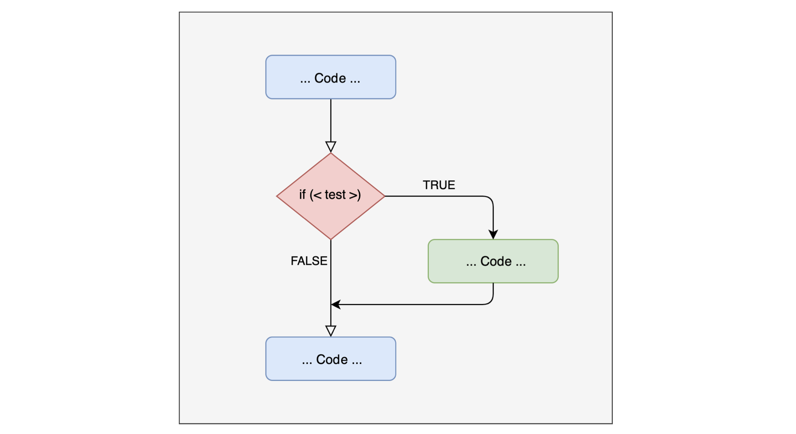
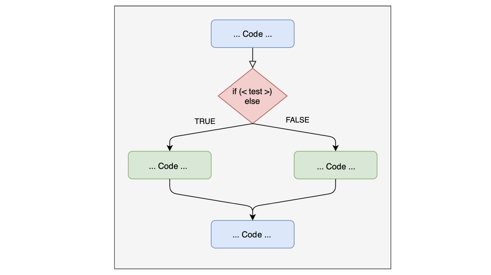

[1] 5We will look at the main programming constructs and how they are applied in R. Many of the concepts presented are general, so they also apply to other programming languages. Here we will cover the most basic aspects; for more advanced applications we suggest the book: Advanced R
Programming constructs
Conditional programming
Iterative programming
Just like mathematical functions, a function in programming abstracts a series of operations (in our case a portion of code): given some inputs, it performs a series of operations and returns some outputs.

The command used to create a function in R is function(), followed by a pair of curly braces { } inside which we write the body of the function:
The function I created takes x and y as input, adds them, and returns the result as output.
We can perform many different operations inside a single function. It is better to use the return() command to explicitly define the output we want, for example…
Let’s take a repetitive operation often performed in data analysis: standardizing a variable (transforming it into z scores), i.e. subtracting its mean \(\mu_x\) from a vector x of observations and then dividing by the standard deviation \(\sigma_x\) :
\[ x_z = \frac{x - \mu_x}{\sigma_x} \]
To create this function we need to define:
arguments: variables to be defined (if not already defined)
body: the operations the function must perform using the arguments
output: what the function must return as a result
The arguments are the variable parts of the function that are defined and then needed to run the function itself. In our function the only argument is the input vector. Just like mean and sd, we can add a second argument indicating whether to remove NAs:
The body of the function contains the operations to perform using the input arguments. In our case we need to subtract the mean and divide by the standard deviation.
The output is the result the function returns after performing all the operations. In our case we want the function to return the vector transformed into z scores. As we saw before, we can use the return() function, which explicitly tells the function what to return:
We have now created this function, which becomes an object in our environment, and we can use it
{} can be omitted if the code is all on the same linereturn() can be omitted if the last line is the desired outputifIn programming we usually need not only to perform a series of operations BUT to perform operations depending on some conditions.
ifThe concept of if condition then do operation is translated in programming through what are called if statements

if statementLet’s see an example
if statement - STOPThere is a family of functions with the is. prefix that returns TRUE when the object type matches the requested one and FALSE otherwise.
[1] 5.5Error in `myfun_stop()`:
! the vector must be numericif...elseUsing a single if may not be enough in some situations. Above all because we can see the if as a temporary detour from the main script that is taken only if a condition is true; otherwise the script goes on.
if...elseIf we want a more “symmetric” structure, we can perform some operations if the condition is true (if) and others for all the other scenarios (else).

if...elseLet’s see an example
if...else - nestedThe value is greater than 2The value is less than 0The value is between 0 and 2To understand which conditional structure to use, it is important to understand the problem we need to solve well. Let’s take an example: imagine we have 2 types of data in R, strings and numbers. In this case it is enough to have an if statement that checks whether the element is a string/number and performs a given operation.
Let’s write a function that returns the mean when the vector is numeric, and the frequency table otherwise.
Let’s test the function
One limitation of if statements is that they only work on a single value (i.e. they are not vectorized). So, while the my_summary function works because it evaluates whether the whole vector is numeric (is.numeric())…
If we wanted to use the myfun_if function …
function (x)
{
if (x > 0) {
cat("The value is greater than 0\n")
}
cat("End of function")
}it would not work…
The vectorized version is obtained with the ifelse() function, whose arguments are the condition to test, the output if the condition is TRUE, and the output if it is FALSE
When we need to test several alternatives we can create nested ifelse(). Imagine we have an age vector and want to create another vector where age is divided into 3 groups: child, adult, elderly:
[1] 31 23 43 22 5 61 35 59 22 30 [1] "adult" "adult" "adult" "adult" "child" "elderly" "adult"
[8] "adult" "adult" "adult" dplyr::case_whenWhen there are many conditions to test (roughly > 3), writing many nested ifelse() can be tedious. We can then use the dplyr::case_when() function from the dplyr package, which is a generalization of ifelse():
the results are identical…
dplyr::case_whenRecoding the values of a variable, for example reversing the items of a questionnaire, is easily done with dplyr::case_when():
[1] 5 3 2 3 2 3 1 1 1 1 2 5 4 4 3 3 2 2 4 4dplyr::case_whenThese functions can also be applied to the variables in a dataframe:
# create a dataframe with id and age variables
mydf = data.frame(id = factor(1:30), age = sample(14:50, 30))
# save it for later
readr::write_csv(mydf, file = "data/mydf.csv")
# create a third variable with "adolescent", "young", "adult"
mydf$age_cat = factor(case_when(mydf$age > 30 ~ "adult",
mydf$age <= 30 & mydf$age >= 20 ~ "young",
mydf$age < 20 ~ "adolescent",
TRUE ~ "error" # check for coding errors
))
str(mydf)'data.frame': 30 obs. of 3 variables:
$ id : Factor w/ 30 levels "1","2","3","4",..: 1 2 3 4 5 6 7 8 9 10 ...
$ age : int 47 50 23 39 28 15 17 38 19 42 ...
$ age_cat: Factor w/ 3 levels "adolescent","adult",..: 2 2 3 2 3 1 1 2 1 2 ...We have already seen that the library() command loads a package, making the functions it contains available. Without needing to create a package, we can still organize our own functions effectively.
We have two options
write the functions in the same script where they are used
write a separate script and import all the functions it contains
Here too it is a matter of style and convenience; in general:
if we have many functions, it is better to write them in one or more separate files and then import them at the beginning of the main script
if we have few functions, we can keep them in the main script, perhaps in a dedicated section at the beginning
In the second case it is enough to write the function, and it will be saved as an object in the main environment. For the first scenario, we can use the source("utl/script.R") function:
Now my functions are available as objects in my environment and I can use them:
'data.frame': 30 obs. of 2 variables:
$ id : num 1 2 3 4 5 6 7 8 9 10 ...
$ age: num 47 50 23 39 28 15 17 38 19 42 ... id age age_cat age_z
1 1 47 adult 1.3942438
2 2 50 adult 1.6652631
3 3 23 young -0.7739107
4 4 39 adult 0.6715256
5 5 28 young -0.3222119
6 6 15 adolescent -1.4966289
Open this link and keep it open: